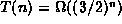

Data Structures and Algorithms
with Object-Oriented Design Patterns in Java
Data Structures and Algorithms
with Object-Oriented Design Patterns in Java
Consider the problem of computing the
generalized Fibonacci numbers .
The generalized Fibonacci numbers of order  are given by
are given by
Notice that the ``normal'' Fibonacci numbers considered in Section  are the same as the generalized Fibonacci numbers of order 2.
are the same as the generalized Fibonacci numbers of order 2.
If we write a recursive method
that implements directly Equation ,
we get an algorithm with exponential running time.
For example, in Section it is shown that
the time to compute the second-order Fibonacci numbers
is .
The problem with the direct recursive implementation is that
it does far more work than is needed because
it solves the same subproblem many times.
For example,
to compute it is necessary to compute
both  and .
However, in computing
and .
However, in computing  it is also necessary to compute , and so on.
it is also necessary to compute , and so on.
An alternative to the top-down recursive implementation is to do the calculation from the bottom up. In order to do this we compute the series of sequences
Notice that we can compute  from the information contained
in
from the information contained
in  simply by using Equation .
simply by using Equation .
Program defines the method fibonacci
which takes two integer arguments n and k
and computes the  Fibonacci number of order k
using the approach described above.
This algorithm uses an array to represent
the series of sequences .
As each subsequent Fibonacci number is computed
it is added to the end of the array.
Fibonacci number of order k
using the approach described above.
This algorithm uses an array to represent
the series of sequences .
As each subsequent Fibonacci number is computed
it is added to the end of the array.
Program: Dynamic programming example--computing generalized Fibonacci numbers.
The worst-case running time of the fibonacci method
given in Program is a function of both n and k:
 Copyright © 1998 by Bruno R. Preiss, P.Eng. All rights reserved.
Copyright © 1998 by Bruno R. Preiss, P.Eng. All rights reserved.